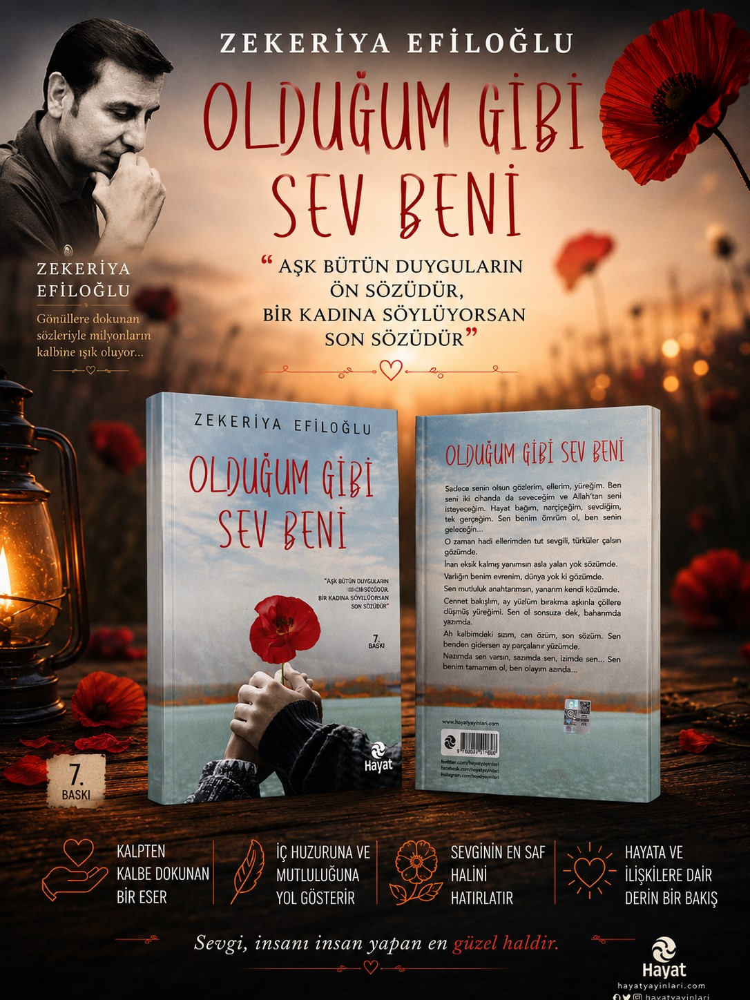

Çalışmalarım
Portföyümden seçilmiş bazı çalışmalar.

Görsel Tasarım
Yapay zekâ destekli özgün görsel tasarım çalışmaları.

Kitap Tasarımları
Kitaplar ve yazılı görsel çalışmalar.

Manevi Tasarımlar
Dua, huzur ve manevi temalar üzerine özgün görsel çalışmalar.

Özel Temalı Çalışmalar
Duygu ve hikâye taşıyan özel konsept görseller.

Konsept Tasarımlar
Hayal gücü ve yapay zekâ ile oluşturulan özgün çalışmalar.

Özel Gün Tasarımları
Milli ve özel günler için hazırlanan görsel çalışmalar.